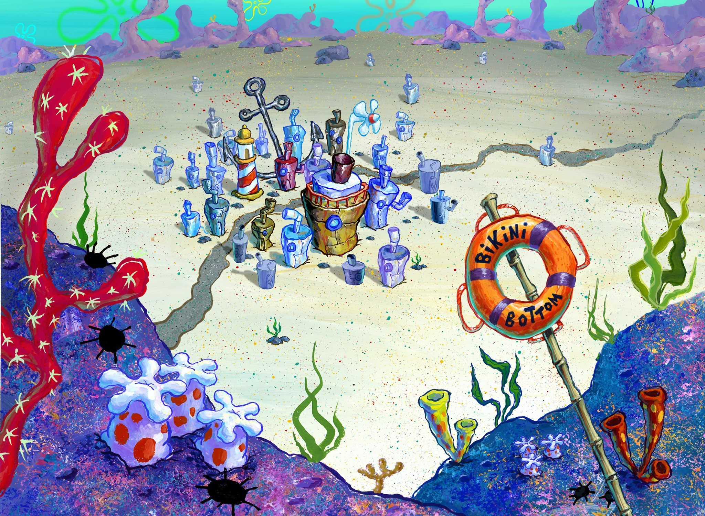

PatrickStar is one of the ten main characters in the SpongeBob SquarePants franchise. He is SpongeBob's best friend as well as one of his two neighbors. He is a naïve and overweight pink sea star. He is voiced by Bill Fagerbakke and first appears in the pilot episode, "Help Wanted."
Patrick is the ignorant but humorous best friend of SpongeBob SquarePants. He is portrayed as being an overweight pink starfish, who serves as the village idiot of the underwater city of Bikini Bottom. Patrick gets dumber throughout the series and has been shown to make many ludicrous mistakes. Despite this, he has occasionally been portrayed as a savant, with articulate observance to certain subjects in specific detail. However, he always reverts quickly back to his usual, unintelligent self after displaying a moment of wisdom. He holds no form of occupation except for several very brief stints working at the Krusty Krab and at the Chum Bucket in a variety of positions, and mostly spends his time either clowning around with SpongeBob, catching jellyfish with him, or lounging beneath the rock under which he resides. At home, Patrick is usually depicted either sleeping, watching TV, or engaged in the "art of doing nothing", at which he is an expert. All the furnishings in the space under his rock are made of sand, and Patrick can simply opt to quickly build up furniture as needed; even so, his living space is sparse and contains only the barest essentials. Aside from his best friend SpongeBob, who is often impressed by Patrick's capacity to come up with naïve yet genius plans or solutions, Patrick frequently irritates those around him and is confounded by the simplest of questions or subjects. The characters of Mr. Krabs and Squidward have no patience for Patrick's stupidity, and the former does not pay him much regard; Clancy Brown, who provides Mr. Krabs' voice, said, "The only person that he [Mr. Krabs] doesn't hire is Patrick because Patrick is just too stupid to work for nothing. " Sandy often gets annoyed by Patrick, but still sees him as a friend.
In 2002, the show's popularity among the gay community grew, and it was reported that they had embraced the show, according to BBC Online. The Wall Street Journal also raised questions about SpongeBob and Patrick in a recent article that pointed out the show's popularity in the gay community. Tom Kenny, in response to the article, said "[I] felt the insinuation was a stretch. I had heard that gay viewers enjoy the show in the same way that lots of people—college students, parents and children—like the show [...] I thought it was rather silly to hang an entire article on that. I don't think it's a case of it being a gay-friendly show—It's a human-being-friendly show. They're all welcome," Kenny said.
Patrick has appeared in other SpongeBob SquarePants-related media, including board games, comic books, keychains, plush toys, trading cards and video games. Patrick has a major role in The SpongeBob SquarePants Movie, the first feature-length film adaptation of the show. The film was released on November 19, 2004 and has been a financial success, grossing over $140 million worldwide. He has also appeared in the film's sequel, which was released in theaters on February 6, 2015. In the second film, Patrick (along with SpongeBob, Squidward, Mr. Krabs, and Plankton) is rendered in 3D (using CGI) in the live action scenes. The group becomes an "Avengers-type team"; Patrick transforms to Mr. Superawesomeness. In 2009, actor John Fricker portrayed Patrick in the musical adaptation of the third season episode "The Sponge Who Could Fly". Fricker and the musical itself were well received by most critics. Gordon Barr and Roger Domeneghetti of the Evening Chronicle described the musical as "a silly riot of colour [...] as you'd have to expect from an adaptation of a cartoon TV show", while Viv Hardwick of The Northern Echo said that Fricker and Martin Johnston (Mr. Krabs) "win the biggest costume contest." A critic from the Chichester Observer wrote, "John Fricker is in his element as the simple but lovable Patrick Star".